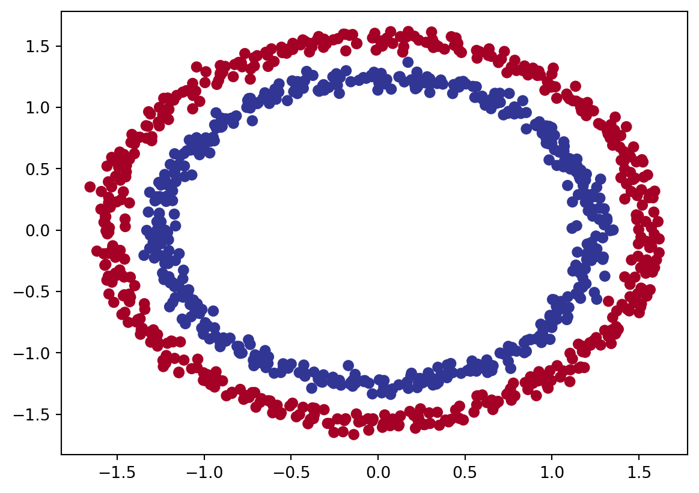

We’ll create a neural network with three hidden layers to fit the data. Here’s the step-by-step approach:
1. Import Libraries
2. Create the Dataset
3. Define the Neural Network
4. Define Loss and Optimizer
5. Train the Model
6. Evaluate the Model
# Step 1: Import Librariesimport torchimport torch.nn as nnimport torch.optim as optimimport numpy as npimport matplotlib.pyplot as pltfrom sklearn.datasets import make_circlesfrom sklearn.model_selection import train_test_splitfrom sklearn.preprocessing import StandardScaler
/Users/thanhliem/Library/Python/3.9/lib/python/site-packages/threadpoolctl.py:1214: RuntimeWarning:
Found Intel OpenMP ('libiomp') and LLVM OpenMP ('libomp') loaded at
the same time. Both libraries are known to be incompatible and this
can cause random crashes or deadlocks on Linux when loaded in the
same Python program.
Using threadpoolctl may cause crashes or deadlocks. For more
information and possible workarounds, please see
https://github.com/joblib/threadpoolctl/blob/master/multiple_openmp.md
warnings.warn(msg, RuntimeWarning)
# Step 2: Create the Dataset# Generate synthetic dataX, y = make_circles(n_samples=1000, noise=0.03, random_state=42)# Standardize the datascaler = StandardScaler()X = scaler.fit_transform(X)# Convert to PyTorch tensorsX_tensor = torch.tensor(X, dtype=torch.float32)y_tensor = torch.tensor(y, dtype=torch.float32).view(-1, 1)# Split the data into training and test setsX_train, X_test, y_train, y_test = train_test_split(X_tensor, y_tensor, test_size=0.2, random_state=42)
# Visualize with a plotimport matplotlib.pyplot as pltplt.scatter(x=X[:, 0], y=X[:, 1], c=y, cmap=plt.cm.RdYlBu);

The architecture of the neural network
Input Size = 2
The input size of 2 is determined by the nature of the dataset we’re working with. The make_circles function from sklearn.datasets generates a 2-dimensional dataset where each data point has two features (coordinates in a 2D space). Therefore, the input to the neural network has to accommodate these two features, which is why the first layer (nn.Linear(2, 64)) expects an input size of 2.
Output Size = 1
The output size of 1 is determined by the task we’re trying to solve, which is a binary classification problem. The make_circles dataset labels each data point as either 0 or 1. Thus, the neural network needs to output a single value for each data point that can be interpreted as the probability of the data point belonging to class 1. The final layer (nn.Linear(64, 1)) reduces the output to a single value for each input data point.
Network Architecture
Here’s a brief breakdown of the network layers:
Input Layer: self.layer1 = nn.Linear(2, 64)
Takes 2 input features (the 2D coordinates).
Outputs 64 features.
Activation function: ReLU (self.relu).
First Hidden Layer: self.layer2 = nn.Linear(64, 128)
Takes the 64 features from the previous layer.
Outputs 128 features.
Activation function: ReLU.
Second Hidden Layer: self.layer3 = nn.Linear(128, 64)
Takes the 128 features from the previous layer.
Outputs 64 features.
Activation function: ReLU.
Output Layer: self.layer4 = nn.Linear(64, 1)
Takes the 64 features from the previous layer.
Outputs a single feature, representing the predicted probability of the input belonging to class 1.
Activation Function: ReLU
The ReLU (Rectified Linear Unit) activation function is applied after each hidden layer to introduce non-linearity into the model, allowing it to learn more complex patterns.
# Step 3: Define the Neural Networkclass NeuralNetwork(nn.Module):def__init__(self):super(NeuralNetwork, self).__init__()self.layer1 = nn.Linear(2, 64)self.layer2 = nn.Linear(64, 128)self.layer3 = nn.Linear(128, 64)self.layer4 = nn.Linear(64, 1)self.relu = nn.ReLU()def forward(self, x): x =self.relu(self.layer1(x)) x =self.relu(self.layer2(x)) x =self.relu(self.layer3(x)) x =self.layer4(x)return xmodel = NeuralNetwork()
# Step 4: Define Loss and Optimizercriterion = nn.BCEWithLogitsLoss()#BCEWithLogitsLoss: Binary Cross Entropy with Logits Loss which is suitable for binary classification tasks#• Binary Cross Entropy (BCE) Loss: Measures the difference between true labels and predicted probabilities.#• With Logits: Expects raw output (logits) from the model, not probabilities. Internally applies the sigmoid function to logits before computing the loss.optimizer = optim.Adam(model.parameters(), lr=0.001)#Adam (Adaptive Moment Estimation) optimizer computes adaptive learning rates for each parameter.#lr=0.001: This sets the learning rate for the optimizer
# Function 1: plot decision boundarydef plot_decision_boundary(model: torch.nn.Module, X: torch.Tensor, y: torch.Tensor):""" Plots decision boundaries of model predictions on X in comparison to y. """# Move model and data to CPU model.to("cpu") X, y = X.to("cpu"), y.to("cpu")# Setup grid for plotting decision boundaries x_min, x_max = X[:, 0].min() -0.1, X[:, 0].max() +0.1 y_min, y_max = X[:, 1].min() -0.1, X[:, 1].max() +0.1 xx, yy = np.meshgrid(np.linspace(x_min, x_max, 101), np.linspace(y_min, y_max, 101))# Prepare data for prediction X_to_pred_on = torch.from_numpy(np.c_[xx.ravel(), yy.ravel()]).float()# Make predictions model.eval()with torch.no_grad(): y_logits = model(X_to_pred_on)# Adjust logits to prediction labelsiflen(torch.unique(y)) >2: y_pred = torch.softmax(y_logits, dim=1).argmax(dim=1) # multi-classelse: y_pred = torch.round(torch.sigmoid(y_logits)) # binary# Reshape predictions and plot y_pred = y_pred.reshape(xx.shape).numpy() plt.contourf(xx, yy, y_pred, cmap=plt.cm.RdYlBu, alpha=0.7) plt.scatter(X[:, 0], X[:, 1], c=y, s=40, cmap=plt.cm.RdYlBu) plt.xlim(xx.min(), xx.max()) plt.ylim(yy.min(), yy.max()) plt.show()# Function 2: plot predictionsdef plot_predictions(train_data, train_labels, test_data, test_labels, predictions=None):""" Plots training and test data and compares predictions if provided. """ plt.figure(figsize=(10, 7))# Plot training data plt.scatter(train_data, train_labels, c="b", s=4, label="Training data")# Plot test data plt.scatter(test_data, test_labels, c="g", s=4, label="Testing data")if predictions isnotNone:# Plot predictions on test data plt.scatter(test_data, predictions, c="r", s=4, label="Predictions")# Display legend plt.legend(prop={"size": 14}) plt.show()
# Plot decision boundaries for training and test setsplt.figure(figsize=(6, 6))plt.title("Train")plot_decision_boundary(model, X_train, y_train)plt.figure(figsize=(6, 6))plt.title("Test")plot_decision_boundary(model, X_test, y_test)